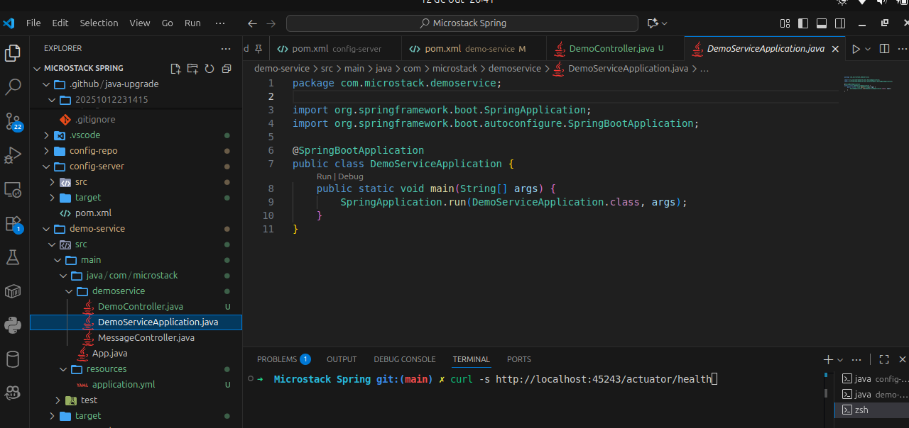
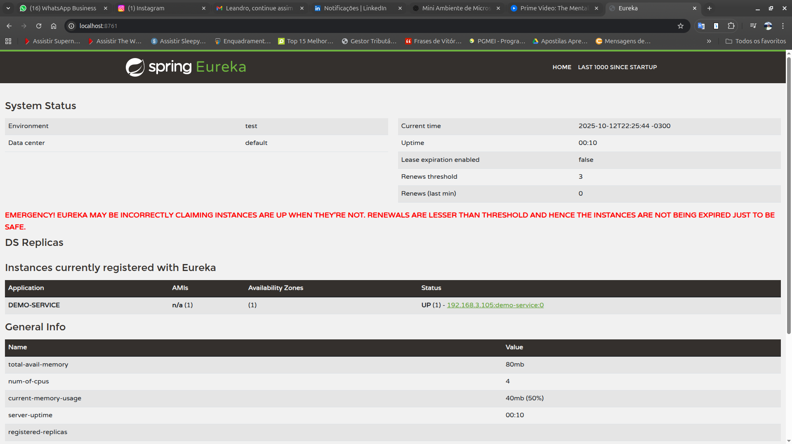

Data Engineer focused on building reliable data pipelines and scalable architectures. I work mainly with Python, but, I’m always eager to learn new technologies.
Featured projects


Microstack Spring (Study)
Educational microservices environment built with Spring Cloud. Includes Config Server, Eureka, API Gateway, and demo service — ideal for studying distributed architecture concepts..
An integrated project for modern data processing, transformation, and visualization using DBT and Evidence. Provides a structured and scalable environment for data analysis.
Curious by nature, I love learning how data moves and scales in real systems. My goal is to master modern data engineering tools and contribute to projects that turn information into real value.